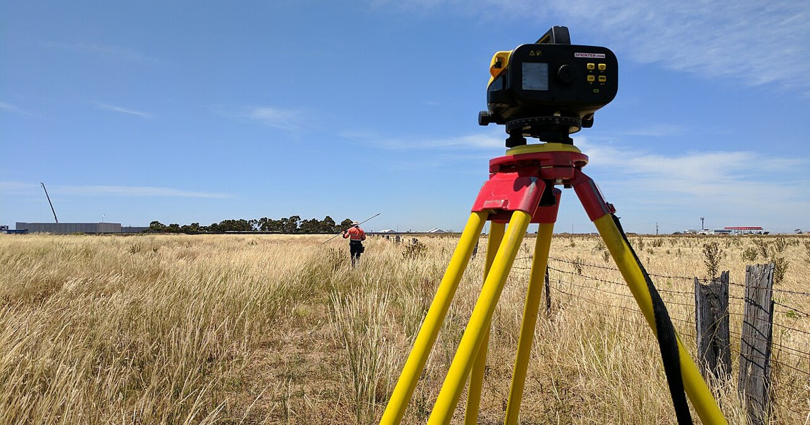
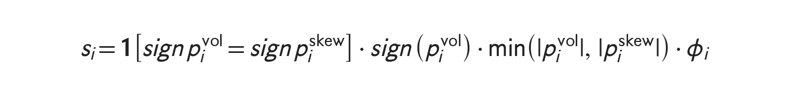
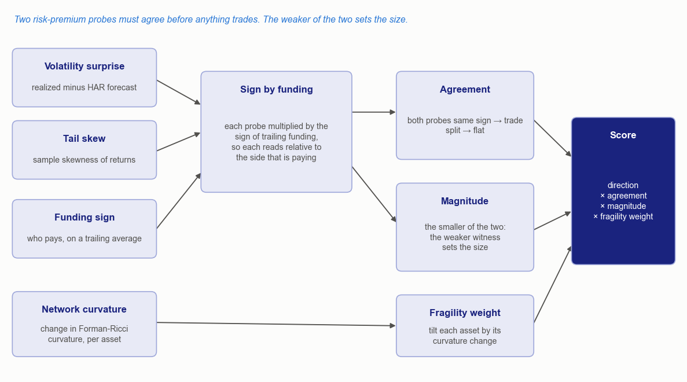
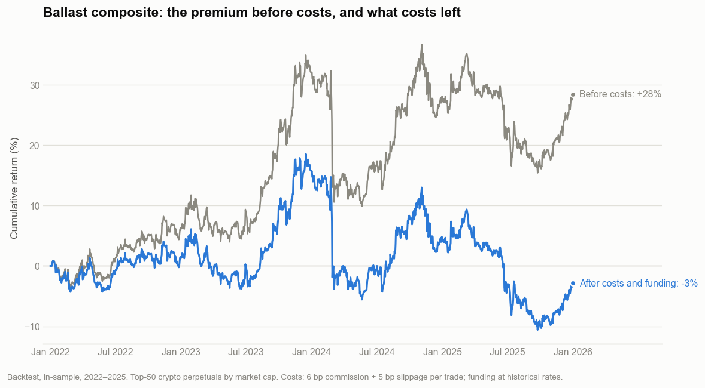
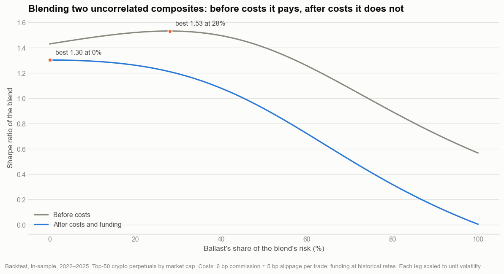
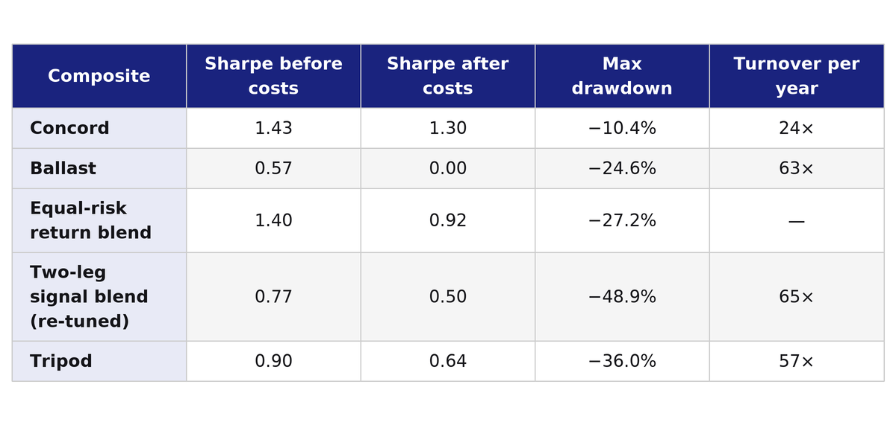

Zero correlation helps only when a leg survives its costs.
The momentum composite in the previous post had a companion built from a different family of ideas. Where Concord reads price formation, the second composite, called Ballast here, prices risk: the premium that leveraged traders pay to hold volatility and tail exposure. The daily correlation between the two over 2022 to 2025 was 0.01.
Portfolio theory says two uncorrelated return streams combine into a better one. Before costs, these two would have: the best blend reaches a Sharpe ratio of 1.53, against 1.43 for Concord alone. After costs, Ballast earned nothing, and every unit of risk given to it lowered the blend. A third, independent source of return later lifted a re-tuned, signal-level blend of the two, though not past Concord alone, and not past a plain blend of their return streams.

Photo: Cvstr, CC BY 4.0, cropped
Ballast: Pricing Risk, Not Trend
A trader who pays funding on a perpetual future is paying to hold a leveraged position. Part of what that buys is exposure to volatility and to the tails: lottery-like upside for some, crash protection for others. Two literatures say such exposures carry a price. Bollerslev, Tauchen and Zhou (2009) showed that the variance risk premium, the gap between option-implied and realized variance, predicts aggregate stock returns, most strongly at a quarterly horizon. Harvey and Siddique (2000) showed that systematic skewness commands a risk premium in the cross-section of stocks.
Ballast builds two probes of those premia that need no option prices, since most perpetuals have no listed options.
Volatility surprise. Corsi (2009) modelled realized variance as an additive cascade of daily, weekly and monthly components, the HAR model:
Each asset gets its own HAR fit on a trailing window of daily realized variance, built from intraday returns. The probe is the latest day's surprise: realized variance minus the model's forecast. It is a stand-in for the variance risk premium rather than the premium itself, which needs implied variance.
Tail skew. The second probe is the sample skewness of each asset's recent returns. Its first version borrowed Jarzynski's (1997) equality from non-equilibrium statistical mechanics, but the only part of that construction with financial content was tail asymmetry, so plain skewness replaced it.
Funding as the trigger. Both probes are multiplied by the sign of each asset's trailing funding rate. Funding identifies which side of the market is paying to be there, and each probe is read relative to that side. The orientation of each probe against funding was settled on the sample, not assumed.
Agreement and the Weaker Witness
The two probes measure the same latent quantity through different channels: one through variance, one through the shape of the tails. Ballast trades an asset only when both probes point the same way. When they agree, the position takes the size of the weaker probe:

Concord pooled its readings with a geometric mean, so a weak reading shrinks the score in proportion. Ballast takes the minimum, which is stricter: the position can be no larger than the weaker of its two witnesses. The last term, φ, comes from the shape of the market's correlation network.

Order of operations from probes to score. Schematic, no parameter values. Diagram: Vertex.
Curvature of the Correlation Network
Sandhu, Georgiou and Tannenbaum (2016) measured the Ricci curvature of S&P 500 correlation networks and found that changes in curvature acted as a "crash hallmark". Ballast uses the closed-form combinatorial curvature of Forman (2003) instead of their optimal-transport measure, in a simplified unweighted-degree form. Two assets are linked when their recent return correlation exceeds a threshold, the link is weighted by that correlation, and each link scores
An asset's curvature is the mean over its links, and the reading is how much that curvature changed over a recent interval. Falling curvature means the asset's neighbourhood is becoming more entangled, which is the fragile direction. The weight φ tilts each position by that change.
The original construction also scaled every position by the aggregate fragility of the whole network. It did nothing: a multiplier applied equally to every position disappears when the book is rescaled to a volatility target.
What Ballast Earned

Backtest, in-sample, 2022–2025, before and after trading costs and funding. Top-50 crypto perpetuals. Chart: Vertex.
Before costs, Ballast compounded to 28 percent over the four years, a Sharpe ratio of 0.57. After costs and funding, it lost 3 percent and its Sharpe ratio was 0.00. Trading costs absorbed almost exactly the whole premium. Compounded, 28 percent over four years is about 6.5 percent a year. Ballast turned over about 63 times its capital a year, counted as total traded notional and charged 11 basis points per unit traded (6 of commission, 5 of slippage), which comes to roughly 6.9 percent a year. The two are close, so the after-cost Sharpe ratio is zero and the breakeven cost is about 10 basis points per unit traded. Funding added roughly nothing, about 0.1 percent over the four years. The book rebalances on a cycle measured in days, and the agreement rule moves assets in and out of the traded set whenever either probe crosses zero, which accounts for part of the churn. That turnover is more than two and a half times Concord's rate.
The premium itself was not stable either. Before costs it was strongest in 2023, at a Sharpe ratio of 1.89, and close to zero in 2024 and 2025. The deepest drawdown after costs was 24.6 percent, and a single day, 28 February 2024, cost 8.5 percent.
When the pair was first measured, Ballast and Concord looked complementary year by year. On an hourly funding record, with funding windows measured in calendar time, Ballast's after-cost premium did not survive.
Why Zero Correlation Was Not Enough
For two uncorrelated return streams, each scaled to the same volatility, mean-variance analysis in the line of Markowitz (1952) gives a simple answer. The best blend weights each leg in proportion to its Sharpe ratio, and the blend's Sharpe ratio is
Before costs, that is the square root of 1.43² plus 0.57², about 1.54. The backtest blend peaks at 1.53, with Ballast carrying 28 percent of the risk. After costs, the second Sharpe ratio is zero, so its optimal weight is zero and the best blend is Concord alone at 1.30. An equal-risk blend of the two return streams falls to 0.92.

Sharpe ratio of a two-composite blend by risk share, each leg scaled to unit volatility. Backtest, in-sample, 2022–2025. Chart: Vertex.
Correlation decides how much a second leg can add. Its own return after costs decides whether it adds anything at all. A leg with zero correlation and zero return is not a diversifier. It is dilution with a low correlation coefficient.
The research record had shown the same tension from the other side. Adding probes for order-flow imbalance, illiquidity and co-jumps made Ballast stronger on its own and a worse partner for Concord, most likely because two of those probes carry trend content and so raised the correlation between the two. Pushing past five probes broke it, most likely because probes for negatively priced features flipped too many of the agreement votes.
Tripod: A Third Source
A signal-level blend of the two composites, re-tuned as a unit, earned a Sharpe ratio of 0.50 after costs. It is a different object from the equal-risk blend of returns above, which earned 0.92. Its realized volatility was about 30 percent, twice that of either composite, and its worst single days, down 22.5 and 14.4 percent, were far larger than the worst day of either composite (4.2 and 8.5 percent). Together they produce its 48.9 percent maximum drawdown, worse than both legs even at a correlation of 0.01. At the same volatility, the equal-risk return blend draws down 27 percent. In the original research, five reweighting schemes, four of them conditioned on a market state, had left the signal-level blend flat. What moved it was a third source of return.
Blitz, Huij and Martens (2011) showed that ranking stocks on residual returns, after removing their exposure to common factors, earns risk-adjusted profits about twice as large as momentum on total returns, and more consistently over time. The crypto version regresses each asset's daily returns on the equal-weighted market over an estimation window, then sums the residuals over a formation window that skips the most recent days and divides by their standard deviation. The geometry follows the paper's months, scaled to days. Across rebalance dates its rank correlation with plain trailing momentum averaged −0.07, so it is close to independent of the momentum inside Concord.
Added as a third leg at equal weight, residual momentum lifted the blend to a Sharpe ratio of 0.64 after costs and 0.90 before. That blend is Tripod.

Backtest statistics, in-sample, 2022–2025. The equal-risk return blend scales both composites to the two-leg blend's volatility. Table: Vertex.
Tripod's 0.64 sits above the re-tuned two-leg blend (0.50) and below both the equal-risk return blend (0.92) and Concord alone (1.30). Its return per unit of drawdown is about a fifth of Concord's: 14 percent a year against a 36 percent drawdown, where Concord earned 20 percent against 10. The two-leg blend's inner settings were tuned for the blend rather than for each composite standing alone, so its legs are not identical to the composites above, and the blend inherited Ballast's cost problem. What Tripod confirms is narrower than a win. Against the re-tuned two-leg blend it is a genuinely new source of return moving a stalled blend, where reweighting the existing sources had not. Against the simple alternatives it does not clear the bar.
The backtests above were run under these settings:
- Sample. 1 January 2022 to 31 December 2025, in-sample: each composite's settings were selected over this window, and every statistic is scored over it. Input history from before 1 January 2022 was used for warm-up only. Tripod's residual-momentum leg follows the published method, and its settings were fixed before it was run, not selected. An earlier version of the three-leg composite, with settings chosen by search, scored 1.52 in-sample, and the next post returns to it.
- Universe. The 50 largest USDT-margined crypto perpetual futures by market capitalisation, re-ranked daily.
- Costs. 6 basis points of commission and 5 basis points of slippage on all traded notional, with funding charged or credited at each contract's historical rate.
- Rebalance. Ballast on a cycle measured in days, and the blends on a cycle of one to two weeks.
- Look-ahead controls. Every input is computed from bars and funding prints strictly before the rebalance time, and universe ranks lag by one day.
- Status. Never deployed.
What This Does Not Establish
Ballast's verdict depends on the cost model. Below a cost of about 10 basis points per unit traded its after-cost return turns positive, but not by much: at the 6 basis points of commission alone, its after-cost Sharpe ratio would be 0.26, against Concord's 1.30. The blend curve would then peak away from zero. The four years are one sample, the correlation was estimated on that sample, and a correlation of 0.01 over four years does not guarantee near-zero correlation in the next drawdown.
The volatility and skew probes are proxies for premia that the cited papers measured with options and market-wide factors. Neither paper tested a crypto cross-section conditioned on funding, and the backtest does not show that either premium exists there as defined in the literature.
Tripod's improvement over the two-leg blend is a single comparison on one sample, with a third leg whose settings were fixed in advance. Switching the curvature weight φ off, with nothing else changed, raised Ballast's Sharpe ratio from 0.57 to 0.84 before costs and from 0.00 to 0.26 after costs. On this sample the weight detracted, though the difference is within noise, and a Ballast without it would still earn too little after costs to change the conclusion.
Where It Stands
Neither Ballast nor Tripod was deployed. The result says less about the probes than about the hurdle that any diversifier has to clear first.
What Generalizes From This
Check a candidate diversifier's after-cost Sharpe ratio before its correlation. For uncorrelated legs, the optimal weight is proportional to that Sharpe ratio, so a leg that earns nothing after costs deserves no weight however low its correlation.
When a blend stalls, add a source, not a gate. Reweighting what is already there cannot create return that is not there.
Sources
- Bollerslev, T., Tauchen, G. and Zhou, H. (2009). "Expected Stock Returns and Variance Risk Premia." Review of Financial Studies 22(11), 4463–4492. Link
- Harvey, C.R. and Siddique, A. (2000). "Conditional Skewness in Asset Pricing Tests." Journal of Finance 55(3), 1263–1295. Link
- Corsi, F. (2009). "A Simple Approximate Long-Memory Model of Realized Volatility." Journal of Financial Econometrics 7(2), 174–196. Link
- Jarzynski, C. (1997). "Nonequilibrium Equality for Free Energy Differences." Physical Review Letters 78(14), 2690–2693. Link
- Sandhu, R.S., Georgiou, T.T. and Tannenbaum, A.R. (2016). "Ricci Curvature: An Economic Indicator for Market Fragility and Systemic Risk." Science Advances 2(5), e1501495. Link
- Forman, R. (2003). "Bochner's Method for Cell Complexes and Combinatorial Ricci Curvature." Discrete and Computational Geometry 29(3), 323–374. Link
- Markowitz, H. (1952). "Portfolio Selection." Journal of Finance 7(1), 77–91. Link
- Blitz, D., Huij, J. and Martens, M. (2011). "Residual Momentum." Journal of Empirical Finance 18(3), 506–521. Link